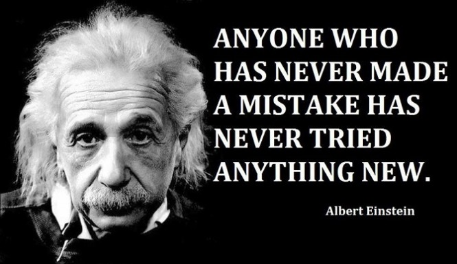

From Technical Project Management to Web Development
Hello, my name is Leonard. I am a quick learner, resourceful, and take ownership in my edification. As a web developer, I look forward to continuing to learn and work with passionate teams, while expanding my fluency in programming. I am a huge sports fan and enjoy watching the NBA, NFL, and European Football. I love the analytical and people aspect of playing poker, and enjoy marathoning Netflix shows.

Recent Project Portfolio
-
 Traverse: Digital Travel Scrapbook
Decoupled Architecture
Back-End: Ruby on Rails, PostgreSQL, ActiveRecord
Front-End: Angular.js, Node.js, Express.js
Google Maps API, Yelp API, Facebook and Instagram OAuth
Traverse: Digital Travel Scrapbook
Decoupled Architecture
Back-End: Ruby on Rails, PostgreSQL, ActiveRecord
Front-End: Angular.js, Node.js, Express.js
Google Maps API, Yelp API, Facebook and Instagram OAuth
-
 Survey Gorilla
Ruby with Sinatra framework
Bootstrap, HTML5, CSS, jQuery, Ajax
Survey Gorilla
Ruby with Sinatra framework
Bootstrap, HTML5, CSS, jQuery, Ajax
-
 Movie Dashboard Info
JavaScript, jQuery, Ajax
OMDb API and themoviedb API
Movie Dashboard Info
JavaScript, jQuery, Ajax
OMDb API and themoviedb API
-
 Lil Twitter
PostgreSQL, ActiveRecord
Followers/Followings association and database schema
Lil Twitter
PostgreSQL, ActiveRecord
Followers/Followings association and database schema
Musings about becoming a Dev
Tech Postings
HTML/CSS Planning is a must! | Nov 15, 2014
Recursion ... | Nov 9, 2014
Ruby Hash Cheat Sheetelsif Ruby ... else if (Javascript) | Nov 2, 2014
NFL Scope it up | Oct 26, 2014
Classes and NFL Players | Oct 19, 2014
The Cycle Method using Schools | Oct 12, 2014
Storing items: junk vs labeled | Oct 5, 2014
Difference between Margin, Border, Padding | Sep 28, 2014
GPS PairingBenefits of Version Control System | Sep 20, 2014
Culture Posting
Asking Good Questions | Nov 16, 2014
Conflict Research | Nov 9, 2014
I did it! | Nov 2, 2014
But you're Asian ... | Oct 26, 2014
Pairing / Feedback Thoughts | Oct 19, 2014
Internet Security, it's a 2-step process | Oct 12, 2014
Step by step, time by time | Oct 5, 2014
Devbootcamp Expecations | Sep 20, 2014
Skills I have Learned
Languages: Ruby, JavaScript, HTML5, CSS3 Frameworks: Rails, Angular.js, Sinatra, Rspec, Jasmine Design Pattern: Object-Oriented Design, Model-View-Controller, RESTful routes Methodologies: Agile Development, Test Driven Development (TDD), Pair Programming, Relational database management system Others: ActiveRecord, jQuery, Ajax, SQL, PostgreSQL Familiarity: PHP, Apache Learning: Python, Node.js, Express.js
Stanford University
Stanford Certified Project Manager Advanced Project Management Program
University of California, Berkeley
Bachelors of Arts in Economics
Dev Bootcamp Software Engineer Apprenticeship: Sep 2014 - Mar 2015 An intensive program that prepares students for careers as web developers by providing the fundamentals of front-end and back-end web development. Demonstrated collaborative learning, pair programming, agile development, and engineering-empathy team building exercises over the course of 19 weeks, averaging 100+ hours of coding & attendance per week (over 2,000 hours total).
Nolo (an Internet Brands / KKR company) Technical Project Manager: Apr 2013 - Nov 2014 - Built custom integrations to Salesforce, which led to revenue increases of 370% quarter/quarter - Utilized HTML, CSS, regular expression to conduct A/B and multivariate testing, which accelerated project enhancements - Managed $100,000+ projects with developers, designers and QA team using Linux, Apache, MySQL and PHP stack - Integrated Nolo Leads API to set-up direct lead gen for clients; enabling them to absorb leads faster and improve close rates
Hit me up
Please contact me using the social icons below
